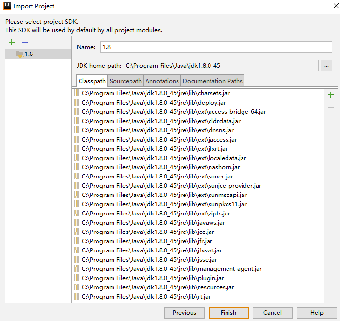
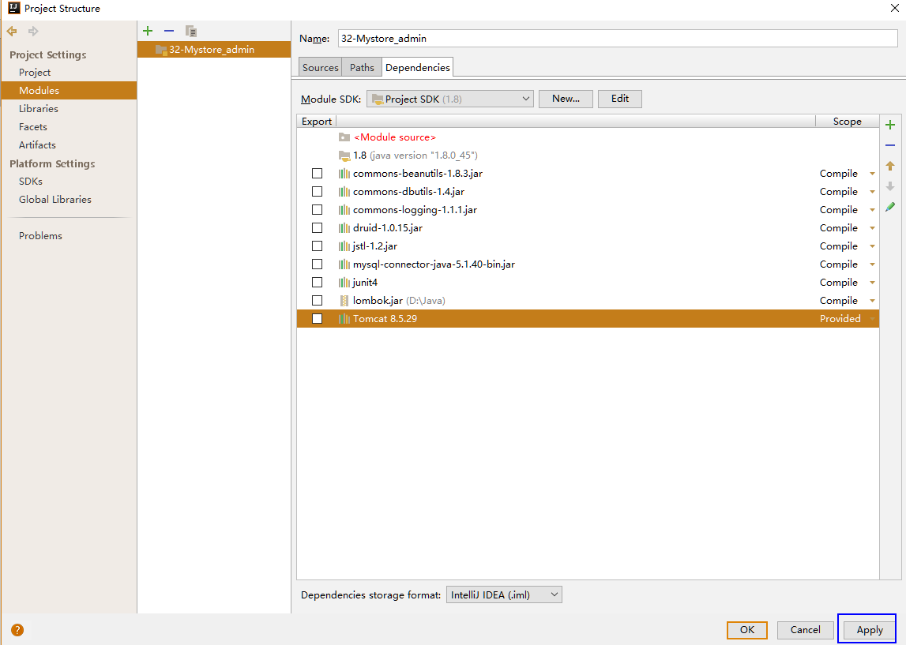
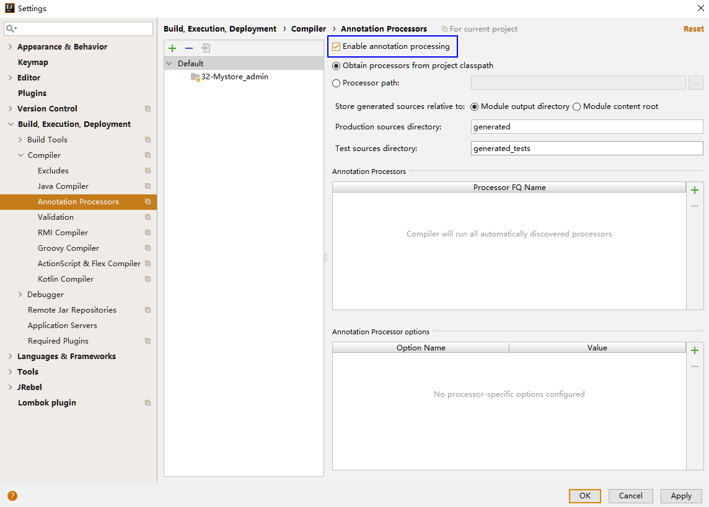

原文出处:本文由博客园博主凌枫zoz提供。
原文连接:https://www.cnblogs.com/lqgcn/p/10831922.html
原文连接:https://www.cnblogs.com/lqgcn/p/10831922.html
很详细的IDEA导入Eclipse项目，配置tomcat并运行项目
1.把Eclipse项目复制一份，放到自己指定的位置
2.打开Idea,在进入工程前选择，inmport Project
注意事项：config当中要把JavaEE的插件都给先安装好
3.在弹出的对象话框中选择，刚才复制的eclise项目位置,点击确定
4.在新弹出的对话框当中选择eclipse，点击next
5.选择项目位置和格式


6.点击finish时，会提示依赖jar包找不到，点击取消即可
7.进入工程进行配置
或者使用工具栏，弹出当前项目配置
进入之后，选择modul选项，把报红的全部移除
选择project SDK
添加lombok.jar包
添加tomcat依赖的jar包

手动添加web部署
添加部署的内容
创建Artifact
8.配置tomcat服务器
添加要部署的项目
9.设置项目支持注解

10.运行项目